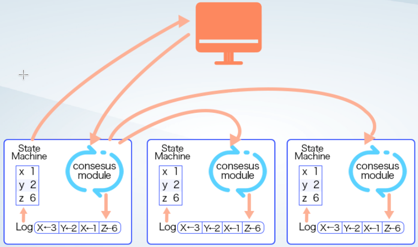

两种模式的诞生
混沌初开，乾坤始奠。 --《幼学琼林》
最基本的区块链是一个Append Only的分布式日志系统。
该系统只是对客户端发送的交易进行排序，然后保存下来。
此时的系统没有账户，没有Token，也没有状态。
应用也只有最简单的存证，任何人都可以把想要存证的内容发送到系统中，没有权限，配额，费用等限制。
存证虽然也非常有用，但是并不能发挥出区块链的优势，因为简单的存证其实并不需要严格的全局顺序。
能发挥区块链优势的最简单应用是Token。其应用也非常广泛，在更复杂的应用中，作为经济激励手段的Token也是不可或缺的。
要实现Token其实就是维护一个账本。账本包含两项最基本的信息：账户和余额。
目前区块链系统基本都是使用公私钥系统，将公钥作为账户，余额就用一个整数表示。
具体实现有两种思路，分别是以Bitcoin为代表的UTXO Model和以Ethereum为代表的Account Model。
Bitcoin的定位是电子现金，模仿现实生活中的现金系统，只有转账的功能。
其思路是在存证的基础上来实现Token。我们通常所说的账本信息，即谁有多少token，其实是在链外维护的。
当发生转账的时候，将转账的信息，比如Alice给Bob转5个token，直接存证到区块链上。
当然这条信息只有Alice才能发，所以要有相应的身份的证据。
为了证明Alice确实有5个token，其要说明这5个token的来源，一般来源于之前别人给Alice的转账。
Bitcoin的交易结构简化版
{
version
inputs
outputs
witnesses
}
一笔token有花费过和未花费两个状态。哪些token未花费过，也是通过已经存证的信息推导，在链外维护的，即UTXO Set。
节点收到一笔新的交易之后，会检查其说明的来源的token是否已经被花费过，如果花费过，则是双花的非法交易，直接丢弃掉。
因此Bitcoin只是附带必要合法性检查的转账信息存证系统。
Ethereum出现的时候，已经有众多fork自Bitcoin的山寨币出现。
大多采用跟Bitcoin一样的签名算法，因此用户可以通过HD钱包的方式，一个账户就掌握多种Token。
Ethereum的定位就是可以在一个平台上方便的发行各种Token。
Ethereum引入了世界状态，把区块链从一个分布式日志系统升级为一个分布式的副本状态机，将交易解释为对链上状态的操作。
所有节点都从同一个初始状态开始，通过创世块的一致性来保证。按照同样的顺序对链上状态进行同样的操作，这个通过共识算法来保证。从而保证所有节点的世界状态一直保持一致。

Ethereum是在链上的世界状态中实现账本，而不是Bitcoin那样在链外维护。
账本是一张表，包含账户和余额两个字段。
如前所述定位的原因，Ethereum自然选择了以账户为主键。因此被称为Account Model。与之对比，Bitcoin相当于是以余额为主键。
Ethereum的转账交易只需要包含：转账人，收款人和转账金额即可。相关的合法性检查和计算都在链上完成。
交易本身只是一个计算请求，类似数据库的SQL语句，需要经过解释执行，且执行过程中可以修改链上的世界状态。
与之相比，Bitcoin是在链下计算，链上只是校验，然后将计算结果在链上存证，整个过程中不涉及链上状态的修改。
Ethereum的Account Model更加用户友好，跟传统的银行柜台业务的概念都是一致的。
而Bitcoin更像是一个支票系统，用户需要一些额外的工作，比如统计一个账户总的余额，转账时需要先挑选花费哪张支票。
在一些复杂的转账操作中，UTXO更加简洁。
比如 A B C D E 5个人出去吃饭，总共消费200元，平均每人40元。但是只有 A B 带钱了，分别付了80元和120元，回去之后5人进行结算。
Account Model转账时必须指定唯一的转账人和收款人，我们需要先求解出具体的转账方案。
比如C转40元给A，D转40元给B，E转40元给B。当然这样的方案有很多种，这里只是其中一种方案。
一个缺点是求解方案比较麻烦，这个例子比较简单，更复杂的情况下，求解会很困难。
另外一个缺点是执行过程是CDE三个人分别去执行的，会有一些中间状态。
比如C和D都按照之前的方案转了帐，但是E没有转账。此时B会很生气，但是ACD则会置身事外。
UTXO此时就简单多了。只要没付钱的人把自己该出的钱拿出来作为inputs，之前多出钱的人把自己应该收的钱作为outputs，组成一个交易即可。
不需要弄明白到底是谁转给谁了多少钱。也不存在A收到钱，B没收到钱的中间状态，要么都成功，要么都失败。